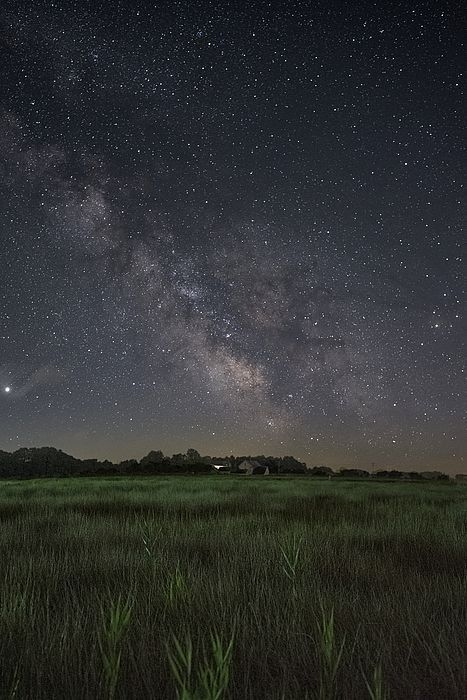
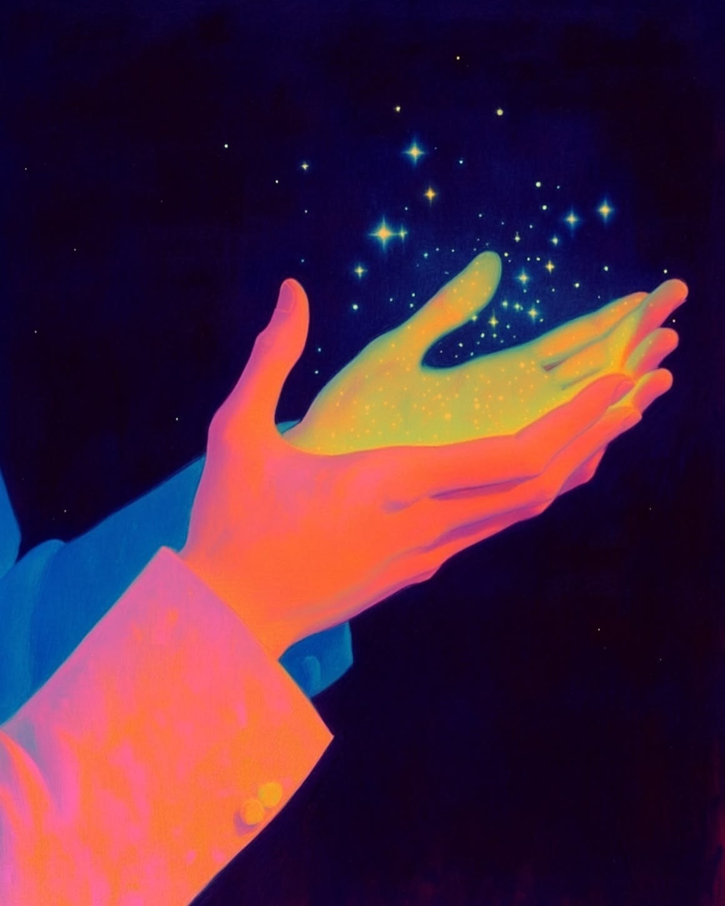
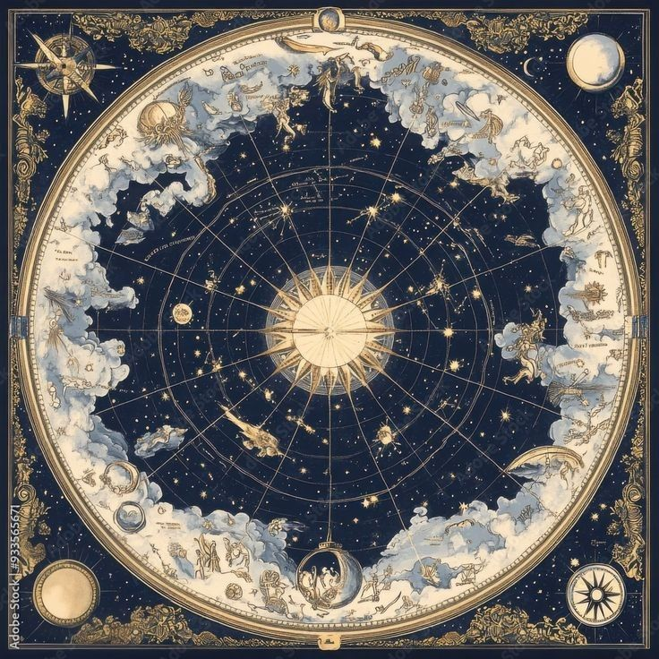
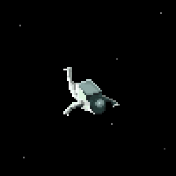
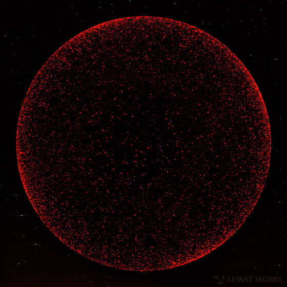
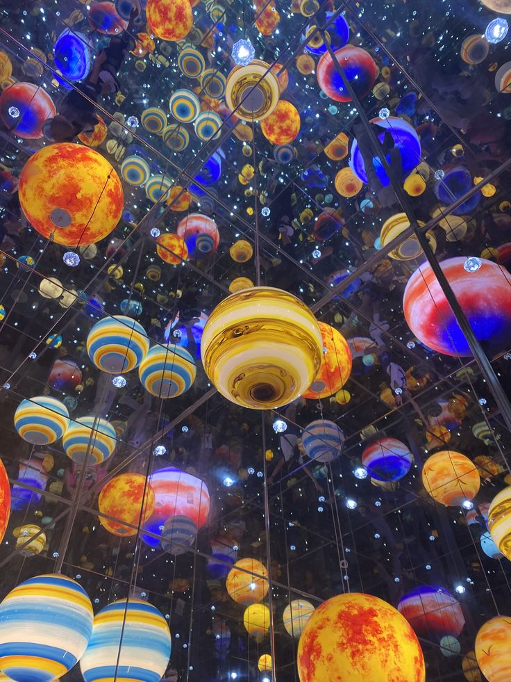

Thousands of years ago, ancient civilizations turned to the heavens, marveling at their wonders.
These ancient people worshipped various gods and often linked their gods with planets in the sky,
which they considered to be “wandering stars.”
We have been landed with the Roman names for the majority of the planets in our solar system.
However, the Greeks are really the ones who deserve the credit for creating these gods
(and their planetary associations). The Romans more or less copied the Greek gods into their own
mythology but changed the names.
Mercury is the smallest planet in our solar system and the one that is closest to the Sun.
It takes Mercury 88 days to complete one revolution in its orbit and it is the speediest of all planets.
As a comparatively bright object in the evening or morning sky, Mercury was well known to many of the ancient people.
The ancient Greeks associated this celestial body with the swift messenger of the gods, Hermes.
One of the best ways to understand Hermes is to look at the story of his birth.
He was walking and talking (fluently) within minutes of his birth. He travelled hundreds of miles on the first day of his life.
Hermes was physically and mentally quick, that's why Greeks called planet Mercury - Hermes.
As Venus is the brightest object in the sky after the Sun and the Moon, it is the most frequently seen of all the planets.
Aphrodite was the god of Venus. She is also associated with beauty, love, passion, pleasure and procreation.
Aphrodite is known as the Daughter of Heaven and Sea, the child of Uranus and Gaia. Also she is said to be a daughter of Zeus
or to have sprung from the foam of the sea.
The third planet from the sun, Earth is the only place in the known universe confirmed to host life.
Gaia, one of the oldest of the Greek gods, is the god of the Earth. Gaia is one of the grandmother of Zeus and both the mother
and the lover of the sky (Ouranus). You can read our previous blog topic for more information about the Goddess of Earth - Gaia.
Mars is the fourth planet from the Sun – a dusty, cold, desert world with a very thin atmosphere.
Mars is also a dynamic planet with seasons, polar ice caps, canyons, extinct volcanoes, and evidence that it was even more active in the past.
Ares is the Greek god of the planet Mars. He was the god of war. More specifically, the violent and brutal aspect of war.
His sister, Athena, on the other hand, was the god of skill and tactics of war.
Jupiter is the largest planet in the Solar System and the fifth planet from the Sun.
When observed from Earth, Jupiter can appear as the third-brightest object in the night sky, after the Moon and Venus.
Notable for its colourful wind-carved belts, this colossal planet is two-and-a-half times more massive than all the other planets combined,
justifying the inspiration for its name - Zeus, king of the gods. Zeus himself, while he was ultimately in charge of everything,
was the god of the sky and thunder. His wife was Hera. Zeus was respected as an allfather who was chief of the gods and assigned roles to the others.
Even the gods who are not his natural children address him as Father, and all the gods rise in his presence.
Uranus is the seventh planet from the Sun. It is named after Greek sky deity Uranus, who in Greek mythology is the father of Cronus (Saturn).
The Greeks imagined the sky as a solid dome of brass, decorated with stars, whose edges descended to rest upon the outermost limits of the flat earth.
Ouranos was the literal sky, just as his consort Gaia (Gaea) was the earth.
Neptune is the eighth planet from the Sun and the farthest known planet in the Solar System.
It is the fourth-largest planet in the Solar System by diameter.
The god of the seas - Poseidon, was the god of Neptune. Poseidon was a brother of Zeus.
Along with the sea, Poseidon was also given powers over storms, earthquakes and horses (horses were seen as part of the element of water).
He is usually depicted holding a three-pronged fishing trident which he can use to stir up storms or hit the ground with to create earthquakes.
Poseidon is a mixed character, like most of the gods (and the sea itself). He is usually mercilessly cruel to his enemies and devoutly loyal to his friends.
Pluto is the dwarf planet of our solar system. It is the largest known trans - Neptunian object by volume, by a small margin,
but is slightly less massive than Eris. Like other Kuiper belt objects, Pluto is made primarily of ice and rock and is much smaller than the inner planets.
Compared to Earth's moon, Pluto has only one sixth its mass and one third its volume.
Hades, the god of the underworld, was also the god of Pluto. Hades was also the god of the hidden wealth of the earth, from the fertile soil
with nourished the seed-grain, to the mined wealth of gold, silver and other metals.
When you’re next looking up at the stars, perhaps trying to find some of the ones on your personalized star map, don’t forget to look for the planets too.
Yes, the Romans may have chosen their names but it was the Greeks who first conceived of them.
The characters and symbols of these planetary gods have filtered down through cultures and civilisations to become a part of the lives we lead today.
Many of the words we use derive from these Greek gods and even our perception of the planets have been largely characterized by Greek mythology.
In astrology, Mars is still seen as the planet of action, energy and is the ruler of our animal instincts.
Don’t forget the numerous constellations (which you can see on your star map) have their roots in Greek mythology.
Sagittarius, for example, is a centaur who was killed by Hercules. Hercules is also supposed to have bitten the goddess Hera when he was breastfeeding
and the milk which spilt out became the Milky Way. Science might explain it differently nowadays but the power of these myths go on.











← back